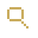
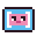
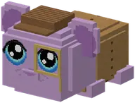

Find little guhs hidden in Verstopguhtje's house, in three difficulties.
Zoek kleine guhs in het huis van Verstopguhtje, in drie moeilijkheden.
Playing verstopguhVerstopguh spelen
Right-click Verstopguhtje and pick makkelijk (5 guhs of 1.5 blocks), medium (8 of 1 block) or moeilijk (12 of just half a block). They hide on random spots all over the house (there are over 700) and you're taken inside. Right-click a guh when you find one. Listen well: hidden guhs make soft guh noises now and then. The game ends when all are found, or when you step on the pink way out in the hall. While you search you can't get hurt or hungry, so you can sprint all you like, and only the seekers inside hear the hidden guhs. Every 30-40 seconds you get a hint that stays: where a guh still is (chat), the lights going out and the windows turning dark in a room without guhs, or a guh that keeps sniffing. Really stuck? Ask the yellow Tipguh in the hall: once a minute it makes a guh light up through the walls for 10 seconds. You still get your tickets, but your time no longer counts for your record.
Rechtsklik op Verstopguhtje en kies makkelijk (5 guhs van 1,5 blok), medium (8 van 1 blok) of moeilijk (12 van maar een half blokje). Ze verstoppen zich op willekeurige plekjes in het hele huis (er zijn er meer dan 700) en jij gaat naar binnen. Rechtsklik op een guh als je hem vindt. Luister goed: verstopte guhs maken af en toe zachte guhgeluidjes. Het spel is afgelopen als ze allemaal gevonden zijn, of als je op de roze uitgang in de hal stapt. Tijdens het zoeken raak je niet gewond en krijg je geen honger, dus je kunt eindeloos rennen, en alleen de zoekers binnen horen de verstopte guhs. Elke 30-40 seconden krijg je een hint die blijft: waar nog een guh zit (chat), de lampjes die uitgaan en ramen die donker worden in een kamer zonder guhs, of een guh die steeds blijft snuffelen. Echt vast? Vraag de gele Tipguh in de hal: elke minuut laat hij een guh 10 seconden door de muren heen oplichten. Je tickets krijg je nog, maar je tijd telt dan niet meer voor je record.
Found them all: 2 / 3 / 5 verstopguh tickets, and 2 more if you're quick (within 2 / 4 / 6 minutes). Your time is on screen and your best time per level is kept. Others can join a game that's running (everyone gets the tickets), but searching together doesn't count for records.
Alles gevonden: 2 / 3 / 5 verstopguhtickets, en 2 extra als je snel bent (binnen 2 / 4 / 6 minuten). Je tijd staat in beeld en je beste tijd per moeilijkheid wordt bewaard. Anderen kunnen meedoen met een spel dat al loopt (iedereen krijgt de tickets), maar samen zoeken telt niet voor records.
- Guhs
- 5 / 8 / 12
- Tickets
- 2 / 3 / 5 (+2)
Prizes: clothesPrijzen: kleding
 Guhlock-pet 3 verstopguhtickets
Guhlock-pet 3 verstopguhtickets
Vergroot-vadsglas 2 verstopguhtickets Detectivejas 5 verstopguhtickets
Detectivejas 5 verstopguhtickets
Highscores in the GuhdexHighscores in de Guhdex
- Makkelijk
- Medium
- Moeilijk
At a glanceIn het kort
- Pays inBetaalt in

tickets tickets- Per gamePer potje
- Makkelijk 2, medium 3, moeilijk 5; +2 if you find them all within 2 / 4 / 6 minutes.Makkelijk 2, medium 3, moeilijk 5; +2 als je ze allemaal vindt binnen 2 / 4 / 6 minuten.
- First time everDe allereerste keer
- –
See alsoZie ook
 VerstopguhhuisStructuresBouwwerken
VerstopguhhuisStructuresBouwwerken VerstopguhtjeCharactersPersonages
VerstopguhtjeCharactersPersonages
Clothing set: Het VerstopguhhuisKledingset: Het VerstopguhhuisClothesKleding